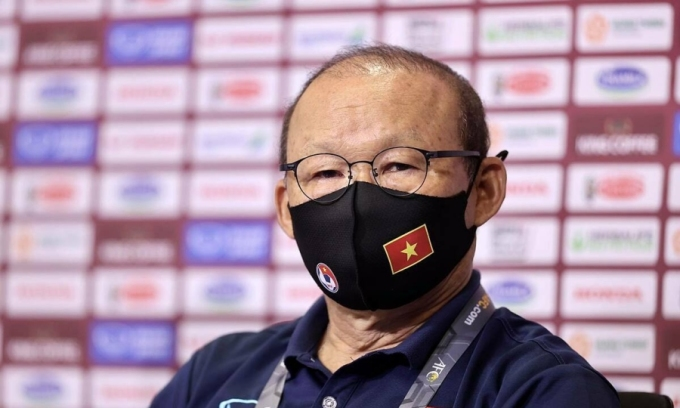
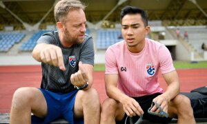

HLV Park: 'Không khí ở đội hiện chưa tốt'
Thứ bảy, 4/12/2021, 12:11 (GMT+7)SINGAPORE - HLV Park Hang-seo thừa nhận Việt Nam chịu nhiều áp lực trước thềm AFF Cup 2020, trong cuộc họp báo trưa 4/12.
"Tôi cảm thấy rất vui khi gặp các HLV ở bảng B", HLV Park Hang-seo mở đầu buổi họp báo. "Chúng tôi sẽ nỗ lực qua mỗi trận để giành kết quả tốt nhất".
Trở về đấu trường khu vực sau những thất bại ở vòng loại thứ ba World Cup 2022 khu vực châu Á, thầy trò Park chịu nhiều áp lực. Bên cạnh đó, sức ép từ việc phải bảo vệ chức vô địch AFF Cup cũng không nhỏ. "Việt Nam vẫn đang trong vòng loại World Cup, với thành tích toàn thua cả sáu trận. Về chuyện đội tuyển có thay đổi lối chơi từ phòng ngự sang tấn công ở AFF Cup hay không, các bạn sẽ có câu trả lời khi xem các trận đấu", HLV Park nói.

"Những thất bại gần đây ảnh hưởng tới bầu không khí toàn đội. Hiện tại, không khí ở đội không tốt", chiến lược gia Hàn Quốc chia sẻ thêm. "Ngoài ra, chúng tôi cũng chịu áp lực bởi chúng tôi là đương kim vô địch. Ngoài bảng này, bảng A cũng có những đội rất tốt. Tôi không thể nói trước kết quả thế nào. Chỉ biết rằng chúng tôi sẽ cố gắng hết sức. Do Covid-19, đội không được ra ngoài, chỉ di chuyển từ khách sạn ra sân đấu. Với cầu thủ thì ngoài thể chất, tinh thần cũng rất quan trọng. Do việc hạn chế di chuyển của chính phủ Singapore, cầu thủ chúng tôi cũng có một chút bị ảnh hưởng về tinh thần. Bên cạnh đó, đội cũng chưa thực sự thích nghi với đồ ăn tại khách sạn. Nhưng vì toàn cục, chúng tôi phải cố gắng thích ứng".
Toàn thua vòng loại cuối World Cup 2022, thầy trò Park nhiều khả năng sẽ ngắt mạch thất bại khi trở về sân chơi "nhẹ ký" hơn là AFF Cup. Khi nhìn vào những thất bại gần đây, HLV Park vẫn lạc quan. "Khi đấu với các đội mạnh ở vòng loại World Cup, trình độ của họ tốt hơn chúng tôi nhiều", ông nói. "Chúng ta thua, nhưng nhìn vào cũng có những điểm tốt. Việt Nam kiểm soát bóng ít hơn đối thủ, nhưng không bao giờ đầu hàng. Và càng đá với đội mạnh, chúng tôi càng có phương pháp thích ứng, đối phó rõ ràng hơn với nhiều loại đối thủ".

Trước khi sang Singapore hôm 1/12, thầy trò HLV Park tập huấn tại Bà Rịa - Vũng Tàu. Đương kim vô địch Việt Nam nằm ở bảng B, lần lượt gặp Lào (6/12), Malaysia (12/12), Indonesia (15/12) và Campuchia (19/12). "Trận mở màn bao giờ cũng chứa đựng nhiều áp lực", HLV Park nói về trận gặp Lào sau đây hai ngày. "Thêm nữa, chúng tôi không có thông tin nào về Lào. Chúng tôi chỉ nghĩ sẽ cố gắng hết sức để có kết quả tốt nhất ở trận này".
Tại AFF Cup 2020, Việt Nam sẽ không có sự phục vụ của tiền vệ Đỗ Hùng Dũng, do phía Singapore không cấp thư mời bổ sung bởi các quy định về nhập cảnh vào nước này bị thắt chặt, không thể có ngoại lệ. Trước đó, tiền vệ Hà Nội nghỉ thi đấu từ tháng Ba, do gãy chân khi va chạm ở V-League 2021. "Hùng Dũng chấn thương, nghỉ thi đấu đã lâu", HLV Park chia sẻ. "Tôi đưa cậu ấy vào giải này chỉ để tìm lại cảm giác và phong độ, chứ chờ đợi Hùng Dũng đóng góp cho đội thì khá khó".
AFF Cup, tiền thân là Tiger Cup, được tổ chức từ năm 1996. Thái Lan giàu thành tích nhất với năm lần đăng quang, nhiều hơn một lần so với Singapore. Việt Nam đã hai lần lên ngôi năm 2008 và 2018, bên cạnh một lần thất bại ở chung kết 1998.
AFF Cup đáng ra tổ chức theo định kỳ vào năm 2020, nhưng bị lùi lại đến cuối năm nay do dịch bệnh. Ban tổ chức vẫn giữ nguyên tên AFF Cup 2020 vì yếu tố thương hiệu. Giải diễn ra từ ngày 5/12/2021 đến 1/1/2022 tại Singapore.
Theo báo vnexpress.net
Tin tức liên quan
Được xem nhiều nhất
-
 Hùng Dũng lỡ hẹn AFF Cup 2021
Hùng Dũng lỡ hẹn AFF Cup 2021
Hùng Dũng chính thức không thể lên đường sang Singapore để hội quân cùng các đồng đội.
-
 Djokovic thua bán kết Davis Cup
Djokovic thua bán kết Davis Cup
Tay vợt số một thế giới Novak Djokovic thua trận đôi quyết định, dừng bước ở bán kết Davis Cup trước Croatia hôm 3/12.
-
 HLV Park: 'Không khí ở đội hiện chưa tốt'
HLV Park: 'Không khí ở đội hiện chưa tốt'
HLV Park Hang-seo thừa nhận Việt Nam chịu nhiều áp lực trước thềm AFF Cup 2020.
-
 Rangnick lần đầu chỉ đạo Man Utd cuối tuần này
Rangnick lần đầu chỉ đạo Man Utd cuối tuần này
Tiếp Crystal Palace sẽ là thử thách đầu tiên với Ralf Rangnick trên cương vị HLV tạm quyền trong sáu tháng của Man Utd.
-
 HRangnick: 'Cầu thủ Man Utd cần tin tưởng tôi'
HRangnick: 'Cầu thủ Man Utd cần tin tưởng tôi'
Trong họp báo ra mắt Man Utd hôm 3/12, HLV Ralf Rangnick nói rằng mọi cầu thủ phải thi đấu vì tập thể.